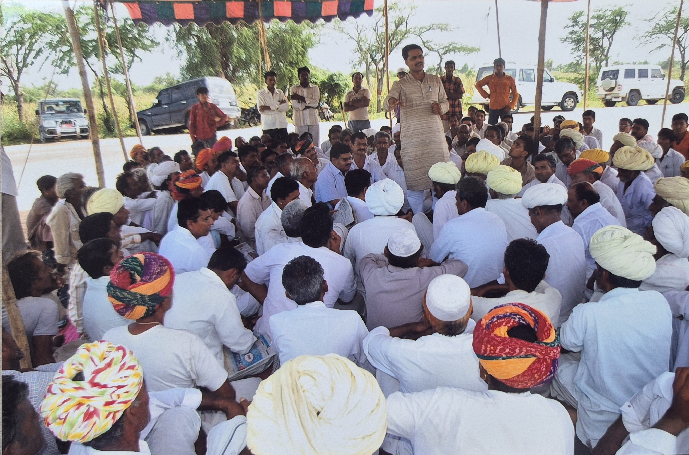

Vasundhara Sewa Samiti
Vasundhara Sewa Samiti is a non-governmental, non-profit organization registered under the Rajasthan State Cooperative/Societies Act, 1958. The organization works in the rural and drought-prone regions of Balotra district, Rajasthan, focusing on the development and empowerment of marginalized communities.
Our mission is to strengthen the capacities of women, youth, children, scheduled castes, and economically weaker sections so that they can access their rights, resources, and opportunities for a dignified life. We believe that sustainable development is possible when communities themselves actively participate in decision-making and development processes.
The organization implements community-based development initiatives in the areas of sustainable livelihoods, education, water conservation and water resource management, disaster risk reduction, institutional development, environmental awareness, and access to government welfare schemes. Through participatory and rights-based approaches, we work closely with local communities, government institutions, and civil society partners to ensure inclusive and sustainable development.
Vasundhara Sewa Samiti is committed to improving the quality of life of rural communities by promoting sustainable livelihoods, water security, social justice, and community empowerment. By combining traditional community knowledge with practical development strategies, the organization contributes towards long-term rural development and aligns its work with national priorities and the Sustainable Development Goals (SDGs).
Read More About Us Contact Us
Focused Thematic Areas of Vasundhara Sewa Samiti
Right Based
In western Rajasthan, Dalits and marginalized communities face a dual exclusion: they are physically distant from government services, and socially denied the rights that legally belong to them. Caste-based discrimination continues in schools and public spaces.
Livelihood
Promoting sustainable livelihoods through skills training, local planning, and connecting families with support schemes. We focus on agriculture, animal husbandry, and vocational training to ensure economic stability for rural households.
Disaster Management
Building preparedness and community response capacity to reduce disaster risk and protect vulnerable families. We work on drought mitigation, water conservation, and emergency relief distribution during crises.

Capacity Building
Strengthening institutions, community leaders, and grassroots workers through training and mentoring. We empower local governance structures and community-based organizations to function effectively and democratically.


🤝 Help Us | हमारी मदद करें
Your support helps Vasundhara Sewa Samiti continue its work with marginalized communities in Balotra, Rajasthan. You can contribute through donations or volunteering your time and skills.
Donate / Volunteer